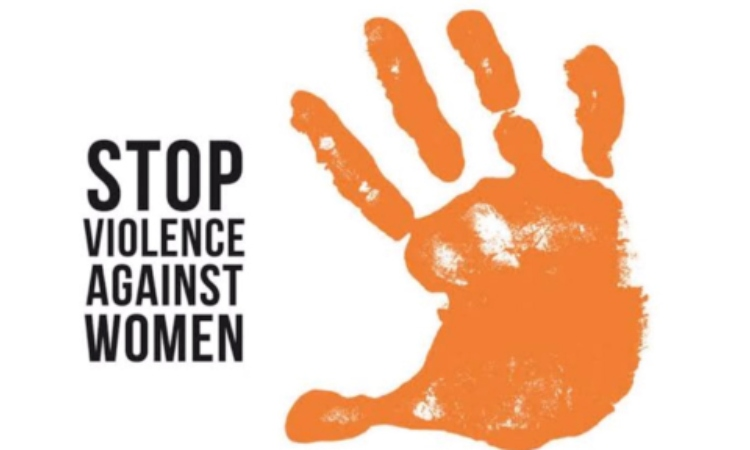
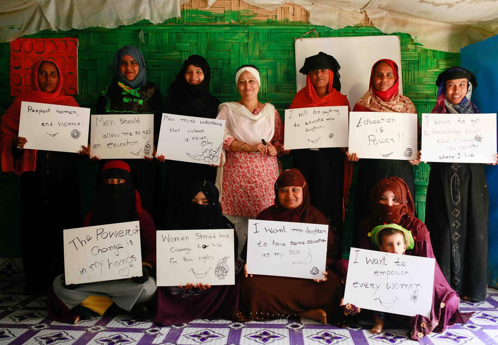
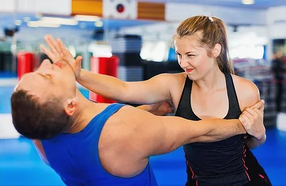
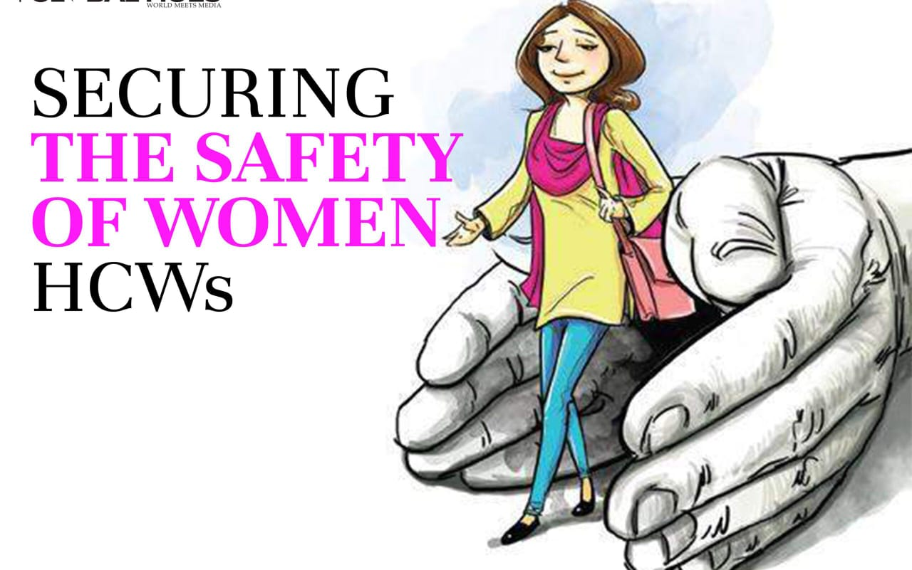

Contact us

Violence against women is “the most pervasive and yet least recognized human rights violation in the world” . This violation can occur in several forms, such as violence in close relationships, sexual violence (including rape, sexual assault, and harassment), psychological and economic violence, trafficking in women, forced prostitution, slavery, and different forms of harmful practices, such as child and/or forced marriages, female genital mutilation, crimes committed in the name of so-called honor, forced abortion, forced pregnancy, and forced sterilization.

Violence against women does not mean only physical violence. It is much broader and includes sexual, emotional, psychological and financial abuse. The National Plan targets two main types of violence against women – domestic and family violence, and sexual assault.
On an international level, the United Nations Declaration on the Elimination of Violence against Women provides the following definition:Violence against women , also known as gender-based violence and sexual and gender-based violence is violent acts primarily or exclusively committed by men or boys against women or girls. Such violence is often considered a form of hate crime, committed against women or girls specifically because they are female, and can take many forms.
Raising awareness and sharing knowledge are key components of a comprehensive global strategy to prevent and combat crimes that affect the environment. The Environment Team strives to create a better understanding of crimes that affect the environment at the national, regional, and global levels, including through research and the development of knowledge and educational products, as well as through advocacy campaigns, awareness-raising events and innovative partnerships.
Self-defense is one of the most important skills women can learn, especially in this perilous times. There are five reasons women’s self-defense is something every woman should take seriously. Here’s a look at why female self defense in NYC and other cities is something important to learn.Having the ability to physically stand up for yourself is important as well. Martial arts for women can teach them not only the art of verbal jiu-jitsu, but the art of physical jiu-jitsu as well. Examples taught in female self-defense classes in NYC can teach women how to escape from an assailant or subdue him.
Today, the safety of women in India is widely discussed everywhere. Now it has become a serious problem. The crime rate is skyrocketing. Women are not safe either at home or outside. Female travelers from other countries also find themselves in a precarious position when traveling to India. But these fears cannot stop them from any social activity. There are laws, but there must be adequate security measures that must be strictly followed to protect against violence against women.
